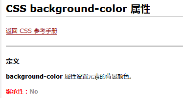

样式的继承
像儿子可以继承父亲的遗产一样，CSS中，祖先元素上的样式，也会被他的后代元素所继承
但并不是所有的样式都会被子元素所继承，比如：背景相关的样式都不会被继承；
想要知道样式是否能被继承，可以查看css离线文档：

示例：
<div style="font-size: 20px;
background-color: pink;">
<p>哈哈哈哈哈哈哈哈</p>
<!--其实背景色不会被继承，但为什么p元素下的内容背景色变了？
因为默认的背景色是透明-->
<p>
xoxoxooxoxoxoxoxoxoxoxox<br />
<span>喜喜喜喜喜喜喜喜</span>
</p>
</div>
效果展示：
哈哈哈哈哈哈哈哈
xoxoxooxoxoxoxoxoxoxoxox
喜喜喜喜喜喜喜喜